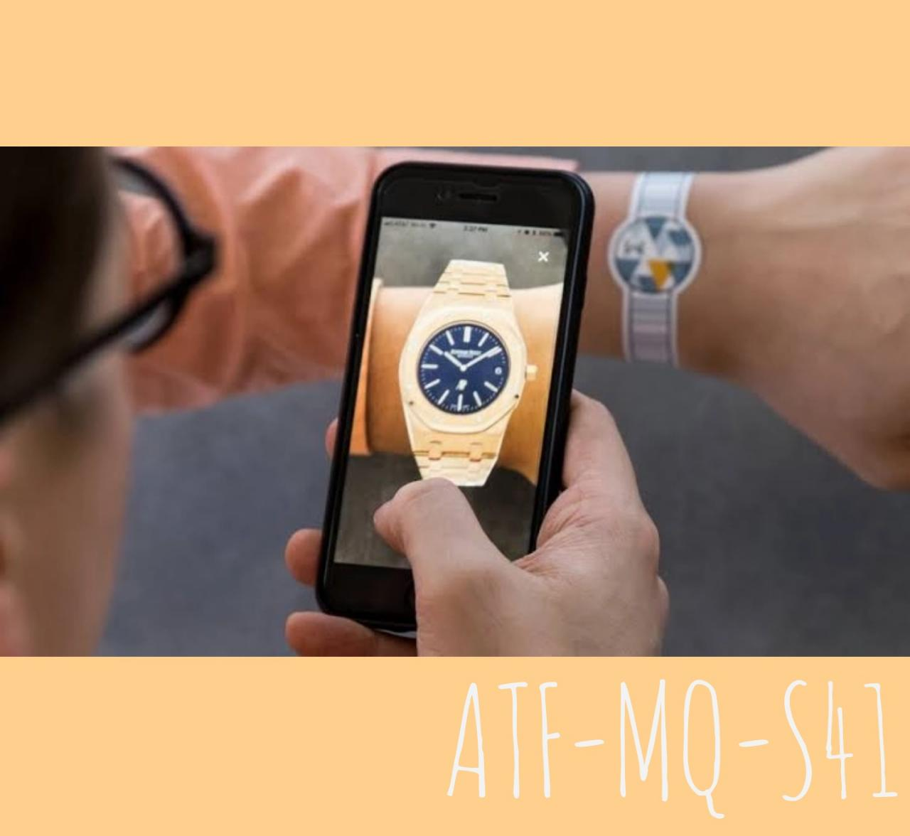
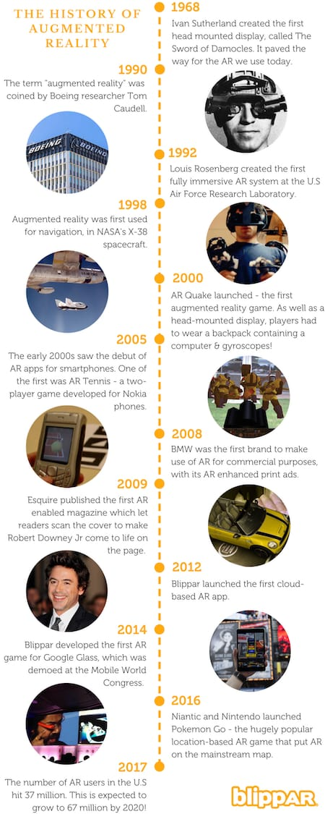

AUGMENTED REALITY
What is it??
What is Augmented Reality? Augmented reality is a technology that virtually places a 3D visual into a “real-world” experience. This gives the user the appearance that the virtual object is co-existing with them in the physical world. AR is often used in gaming, bringing a more realistic experience to gamers and engaging more senses. But it’s also helpful in the shopping experience. Think about it this way: Shopping online is limited to product photos. Occasionally, there’s a video or 360-degree image, but that’s not commonplace. Compare that to an ARexperience – one where you can see how a hat looks on your head or how a table fits in your kitchen. That’s why some brands are incorporating the technology into their strategies. Let’s take a look at 10 of the best augmented reality apps, based on a five-star rating system from consumers.
-

How it works??
First, computer vision understands what is in the world around the user from the content of the camera feed. This allows it to show digital content relevant to what the user is looking at. This digital content is then displayed in a realistic way, so that it looks part of the real world - this is called rendering. Before breaking this down into more detail, let’s use a concrete example to make this clearer. Consider playing an augmented reality board game using a real cereal box as the physical support like in the figure below. First, computer vision processes the raw image from the camera, and recognizes the cereal box. This triggers the game. The rendering module augments the original frame with the AR game making sure it precisely overlaps with the cereal box. For this it uses the 3D position and orientation of the box determined by computer vision. Since augmented reality is live, all the above has to happen every time a new frame comes from the camera. Most modern phones work at 30 frames per second, which gives us only 30 milliseconds to do all this. In many cases the AR feed you see through the camera is delayed by roughly 50 ms to allow all this to happen, but our brain does not notice!
Journey of Augmented Reality
From its use in NASA’s spacecraft in the 1990s to the explosive popularity of Pokemon Go, augmented reality has evolved to become one of the most exciting technologies of our time. But how did it all begin? Who came up with augmented reality, and when was the first augmented reality created? Read on to discover some of the defining moments in AR’s history.
-

1968: Ivan Sutherland created the first head mounted display, called The Sword of Damocles. It paved the way for the AR we use today.
1990: The term augmented reality was coined by Boeing researcher Tom Caudell.
1992: Louis Rosenberg created the first fully immersive AR system at the U.S Air Force Research Laboratory.
1998: Augmented reality was first used for navigation, in NASA's X-38 spacecraft.
2000: AR Quake launched - the first AR game. As well as a head-mounted display, players had to wear a backpack containing a computer & gyroscopes!
2005: The early 2000s saw the debut of augmented reality apps for smartphones. One of the first was AR Tennis - a two-player AR game developed for Nokia phones.
2008: BMW was the first brand to make use of AR for commercial purposes, with its AR enhanced print ads.
2009: Esquire published the first AR-enabled magazine when it let readers scan the cover to make Robert Downey Jr come to life on the page.
2012: Blippar launched the first cloud-based AR app.
2014: Blippar developed the first AR game for Google Glass, which was demoed at the Mobile World Congress.
2016: Niantic and Nintendo launched Pokemon Go - the hugely popular location-based AR game that put AR on the mainstream map.
2017: The number of AR users in the U.S hit 37 million. This is expected to grow to 67 million by 2020!
Shaping a better future
1. AR’s close relationship with Artificial Intelligence (AI) Artificial Intelligence is very much essential for the operations of augmented reality. AR allows objects to be labeled and identified in the viewer’s visual point of view. Many social media applications that we are using today are developed with a combination of augmented reality and artificial intelligence. For example, on Instagram and Snapchat there are various fun filters like the dog filter, bunny ears, pig filter etc. which are based on consumer-facing applications. These applications do not function unless and until both AI and AR are combined and operated. We are sure going to witness and get to use a lot of more social media applications which have functionalities like image enhancements, in this year 2019.
2. AR in terms of Teaching and Training Both the training and teaching technologies belong to the field of education. By using augmented reality technology, any information or data can be passed to a learner in real-time. These systems give a better sense of vision and pull out the objects and hazards which ultimately result in best-practice. Augmented Reality has proved its worth by decreasing the amount of risk and the cost rates in association with training. In 2019, we will see a swift growth of industries which use augmented reality tech and perform their works with much more costly equipment and tools.

3. AR’s connections with Virtual Reality Facebook is one of those most used social media applications which beliefs in augmented reality and virtual reality environments. AR vs VR is also a viral topic nowadays. Augmented Reality results in connecting people, socializing them with the help of virtual reality. Both virtual and augmented realities together worked in developing the” conference calls” where users can see one and other and at the same time, they can interact with each other. These conference calls can carry more than 2 people also at the same time. All this happens to be possible only because of the connections between augmented reality and virtual reality. With the combination of these two platforms, a pioneer named as Spatial has paved its way towards to usage of AR equipment. These tools and equipment allow users to witness pin boards and whiteboards. Augmented Reality along with virtual reality together work on design-based documents lay on real-time objects. In the year 2019, we might see users meeting up and socializing by using virtual reality. There is also a prediction regarding the growth of these systems in terms of sales of VR and AR headsets. 2019 is going to be an exciting year to wait and experience the interactivity between people with real-world representations.
4. AR is overtaking the Automobile Industry Autonomous cars may take a few more years’ time to come into reality. Meanwhile, many automobile companies are making use of augmented reality and artificial intelligence technologies to mark their presence in the market. The automobile industry is an advent of augmented reality businesses. In the year 2019, we are going to see developments in terms of voice assistants like Siri. There will also be a growth of augmented reality in cars. Automobile companies are currently working in dashboard-mounted display graphics from around a vehicle with the help of camera footage. This technology is likely to reduce the occurrence of accidents, as it has the capability of pointing out towards hazards along with the identification of landmarks which are historical along the way. Seeing the results coming from AR technology-based companies, large-scale automobile companies like Tesla, Toyota, Mercedes-Benz, and Volvo have signed contracts to work on this platform. Augmented Reality technology also has the capability to take routes in protecting AR data onto a car’s windshield. With the help of augmented reality technology, we can also experience the identification of frequently used lanes, navigational prompts, detection of hazards, information about the right direction etc. By using AR technology companies are potentially building strategies, to improve the safety conditions of the driver. These strategies will allow the drivers to keep their entire focus on the road and at the same time go through the feedback that would have been displayed on a phone screen. This process can also increase the driver’s comfort levels in the vehicle, and he can conveniently drive his car.
*Creater
Tanima
Anuj